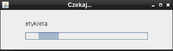

Rozdział jest przewodnikiem po zaawansowanych zastosowaniach skryptów. Dzięki skryptom możliwe jest wykorzystanie programu JStat do innych obliczeń, niż te zaimplementowane w programie. Można też wykorzystywać wbudowane typy i mechanizmy obliczeń do tworzenia nowych algorytmów lub wybierać jedynie te potrzebne w danym momencie.
Wykorzystanie skryptów pozwala JStat zbliżyć się funkcjonalnie do znacznie droższych komercyjnych odpowiedników.
Program JStat zawiera wiele klas, które mogą zostać wykorzystane do obliczeń.
Konstruktorem klasy nazywamy specjalną procedurę, która ma za zadanie utworzenie obiektu w pamięci. Konstruktor wywołujemy słowem kluczowym new i nazwą klasy.
ElementWyrazenia jest superklasą (czyli klasą nadrzędną) dla wszystkich
typów używanych do obliczeń.
Klasa reprezentuje tekst. Jeszcze nie jest szerzej wykorzystywana.
Typ Liczba reprezentuje dowolną liczbę rzeczywistą. Dzięki wykorzystaniu jako podstawy
klasy BigDecimal, czyli wbudowanego typu obsługującego liczby o dowolnej
ilości cyfr znaczących, możliwe jest uzyskanie wysokiej jakości obliczeń.
Ich dokładność może ustawić użytkownik w ustawieniach.
Jednym z ważniejszych zadań stawianych przed projektem była właśnie wysoka
dokładność obliczeń. Niestety, niektóre funkcje, takie jak sinus,
wciąż korzystają z mniej dokładnego systemu prezentacji liczb (dokładniej mówiąc
z 64-bitowego natywnego typu double).
Poprawienie dokładności obliczeń zostanie dokonane w przyszłych wersjach programu.
Możliwe będzie wtedy przeprowadzanie wszelkich obliczeń z dowolną dokładnością.
Jako separatora dziesiętnego dla konstruktora klasy Liczba można używać kropki lub domyślnego wybranego w systemie, w którym program został uruchomiony. W przypadku polskojęzycznych systemów, takich jak Windows lub całej rodziny Linux będzie to przecinek. Można używać notacji naukowej, czyli po małej lub dużej literze "E" wprowadzić wykładnik liczby 10, a przed literą - liczbę.
Ważniejsze metody klasy:
int compareTo(Liczba inna) - porównuje dwie liczby. Zwraca -1
jeśli jeśli inna jest większa, 1
jeśli jeśli inna jest mniejsza, a 0 jeśli są równe.
Wyrażenie: (x <op> y) powinno być zastąpione przez:
(x.compareTo(y) <op> 0), gdzie <op> jest jednym
z operatorów relacji.
Przykład:
Liczba l1 = new Liczba(2.0); // konstruktor z parametrem typu double
Liczba l2 = new Liczba("3,1"); // konstruktor z parametrem typu String
print(l1);
print(l2);
if (l1.compareTo(l2) < 0)
print("l1 jest mniejsza");
else if (l1.compareTo(l2) > 0)
print("l1 jest większa");
else
print("obie liczby są równe");
Są to typy służące do obliczania wyrażeń. Przechowują tablice elementów typu ElementWyrazenia, odpowiednio posortowane.
WyrazenieInfix reprezentuje wyrażenie w notacji infiksowej (standardowej, zazwyczaj
używanej i czytelnej dla człowieka), np. (2+3)*4.
WyrazeniePostfix reprezentuje wyrażenie w notacji postfiksowej,
czyli w odwrotnej notacji polskiej.
Notacja prefiksowa, inaczej nazywana polską, łukasiewicza, przedrostkową charakteryzuje się tym,
że najpierw jest podawany operator, a następnie argumenty. W odwrotnej notacji
najpierw są podawane argumenty, potem operator (różni się jedynie zapisem,
jednak pod względem matematyczno-logicznym jest jednoznaczna z oryginalną
notacją polską).
Po przedstawieniu wyrażenia w tej notacji, późniejsze obliczenie wartości
jest o wiele szybsze (mowa tu o szybkości obliczeń wyrażenia przez komputer,
nie przez człowieka). Poprzedni przykład w notacji postfiksowej
wygląda następująco: 2, 3, +, 4, * (przecinki zostały dodane, aby zachować
czytelność).
Macierz wewnętrznie w programie jest zapamiętywana jako tablica elementów
typu WyrazeniePostfix. Dzięki temu jako macierz
można podawać różne wyrażenia, a następnie, po wywołaniu odpowiedniej funkcji
(getValue), odczytywać macierz wartości tych wyrażeń.
W programie została przyjęta następująca tekstowa reprezentacja tego typu:
{{1; -0,3; 23}{4; -12; 8}} reprezentuje macierz:
Ważniejsze metody klasy:
new Macierz(double[][] matrixDouble) - parametrem
jest dwuwymiarowa tablica elementów typu double,new Macierz(Liczba[][] matrixLiczba) - parametrem
jest dwuwymiarowa tablica elementów typu Liczba,new Macierz(int x, int y) - parametrami są odpowiednio:
liczba kolumn macierzy i liczba wierszy macierzy,new Macierz(String macierz) - parametrem jest
ciąg znakowy mający
składnię taką jak opisana wyżej reprezentacja tekstowa
tego typu,int getLengthX() - zwraca ilość kolumn macierzy,int getLengthY() - zwraca ilość wierszy macierzy,Macierz getValue() - zwraca macierz po przeliczeniu formuły w każdej komórce,Liczba getValueAt(int x, int y) - zwraca element macierzy na pozycji (x, y),
gdzie x to numer kolumny (licząc od zera), a y to numer wiersza (licząc od zera),
void set(int x, int y, liczba val) - wstawia liczbę
do macierzy na pozycji (x, y),
gdzie x to numer kolumny (licząc od zera), a y to numer wiersza (licząc od zera),
void fill(Liczba val) - wypełnia każdą komórkę macierzy podaną liczbą.Ważniejsze statyczne metody klasy:
Macierz podmacierz(Macierz macierz, int xdel, int ydel) - zwraca
podmacierz z macierzy powstałą przez skreślenie xdel kolumny
i ydel wiersza,
Macierz zamienKolumny(Macierz macierz, int x1, int x2) - zamienia
miejscami kolumny o numerach x1 i x2 w macierzy,
Macierz zamienWiersze(Macierz macierz, int y1, int y2) - zamienia
miejscami wiersze o numerach y1 i y2 w macierzy,
Macierz pobierzKolumny(Macierz macierz, int[] kolumny) - pobiera
kolumny z macierzy o numerach podanych w tablicy kolumny,
Macierz pobierzWiersze(Macierz macierz, int[] wiersze) - pobiera
wiersze z macierzy o numerach podanych w tablicy wiersze,
Macierz pobierz(Macierz macierz, int x1, int y1, int lenx, int leny) - pobiera
część macierzy, zwraca macierz o wymarach lenx
na leny. Parametry:
Macierz wklej(Macierz dst, Macierz src, int x1, int y1) - wkleja komórki
z jednej macierzy do drugiej. Zwraca macierz powstałą
przez wklejenie macierzy src do dst.
Wymiary są takie same jak macierzy dst. Parametry:
Przykład:
Macierz m = new Macierz(3, 1); // tworzy macierz 3 kolumny / 1 wiersz
m.fill(new Liczba(4)); // wypełnienie macierzy wartością 4
Liczba l = new Liczba(5.3); // utworzenie nowej liczby
m.set(1, 0, l); // przypisanie wartości środkowemu (drugiemu) elementowi macierzy
print("Macierz: "+m);
print("Ilość kolumn macierzy: "+m.getLengthX());
print("Liczba na pozycji 2x0: "+m.getValueAt(2, 0));
Zarówno w skryptach, jak i we wtyczkach istnieje możliwość skorzystania z wielu funkcji udostępnianych przez program JStat. Opisane niżej nie są kompletną listą, ponieważ dzięki BeanShell istnieje możliwość wywołania każdej metody z dowolnej klasy, z których jest zbudowany JStat.
Funkcja oblicza wartość wyrażenia podanego jako argument.
Parametry:
expression - String,
ma składnię dokładnie taką samą jak w module Kalkulator,
umożliwiając korzystanie ze wszystkich funkcji, dostępnych w module Kalkulator.
Przykład:
print(calc("2+1,4")); // wypisze 3,4
Można też tworzyć szybko różnego rodzaju zmienne. Parser odpowiednio zamieni je na odpowiednie typy, np.
m = calc("{{3; 4; 6,2}{-3; sin(3); -0,2}}");
print(m);
a = calc("5");
b = calc("2-1,2");
print(a);
print(b);
Jeśli istnieje potrzeba, można korzystać z funkcji nie używając jako pośrednika metody calc(). Jednak należy pamiętać o liczbie i rodzaju parametrów. Można je utworzyć korzystając z konstruktorów klas Macierz i Liczba lub za pośrednictwem calc().
Przykład:
Liczba l1 = new Liczba(2);
print(sin(l1));
double[][] md = new double[][] {{2,3,4},{7,8,9}};
Macierz m1 = new Macierz(md);
print(sin(m1));
Macierz m2 = new Macierz("{{20;30;40}{70;80;90}}");
print(cos(m2));
Działania arytmetyczne można wykonywać na liczbach, macierzach i typach double, ale te ostatnie zostają automatycznie przekonwertowane do liczb.
Dodaje dwa elementy.
Parametry:
Oblicza "sumę skalarną" wektorów (pionowych lub poziomych) oraz macierzy.
Gdy macierze mają te same wymiary, liczy sumę każdego elementu pierwszej z odpowiednim elementem drugiej (czyli normalną sumę macierzy). Gdy jedna macierz jest pionowa (o liczbie kolumn równej jeden) lub pozioma (o liczbie wierszy równej jeden), a jej większy wymiar jest równy odpowiadającemu wymiarowi drugiej, to działanie jest wykonywane na wierszach (lub kolumnach).
Parametry:
l1 - liczba,
macierz
lub double,l2 - liczba,
macierz
lub double.Przykład:
m1 = calc("{{1;2;3}}");
m2 = calc("{{10;20;30}{40;50;60}}");
print(dodajSkalarnie(m1,m2)); // wypisze {{11;22;33}{41;52;63}}
m1 = calc("{{1}{2}}");
m2 = calc("{{10;20;30}{40;50;60}}");
print(dodajSkalarnie(m1,m2)); // wypisze {{11;21;31}{42;52;62}}
Odejmuje dwa elementy.
Parametry:
Oblicza "różnicę skalarną" wektorów (pionowych lub poziomych) oraz macierzy.
Gdy macierze mają te same wymiary, liczy różnicę każdego elementu pierwszej z odpowiednim elementem drugiej (czyli normalną różnicę macierzy). Gdy jedna macierz jest pionowa (o liczbie kolumn równej jeden) lub pozioma (o liczbie wierszy równej jeden), a jej większy wymiar jest równy odpowiadającemu wymiarowi drugiej, to działanie jest wykonywane na wierszach (lub kolumnach).
Parametry:
l1 - liczba,
macierz
lub double,l2 - liczba,
macierz
lub double.Przykład:
m1 = calc("{{10;20;30}{40;50;60}}");
m2 = calc("{{1;2;3}}");
print(odejmijSkalarnie(m1,m2)); // wypisze {{9;18;27}{39;48;57}}
m1 = calc("{{10;20;30}{40;50;60}}");
m2 = calc("{{1}{2}}");
print(odejmijSkalarnie(m1,m2)); // wypisze {{9;19;29}{38;48;58}}
Mnoży dwa elementy.
Parametry:
Oblicza iloczyn skalarny wektorów (pionowych lub poziomych) (bez sumowania!).
Gdy macierze mają te same wymiary, liczy iloczyn każdego elementu pierwszej z odpowiednim elementem drugiej (nie jest to zwykły iloczyn macierzy). Gdy jedna macierz jest pionowa (o liczbie kolumn równej jeden) lub pozioma (o liczbie wierszy równej jeden), a jej większy wymiar jest równy odpowiadającemu wymiarowi drugiej, to działanie jest wykonywane na wierszach (lub kolumnach).
Parametry:
l1 - liczba,
macierz
lub double,l2 - liczba,
macierz
lub double.Przykład:
m1 = calc("{{10;20;30}{40;50;60}}");
m2 = calc("{{1;2;3}}");
print(pomnozSkalarnie(m1,m2)); // wypisze {{10;40;90}{40;100;180}}
m2 = calc("{{1}{2}}");
print(pomnozSkalarnie(m1,m2)); // wypisze {{10;20;30}{80;100;120}}
print(pomnozSkalarnie(m1,m1)); // wypisze {{100;400;900}{1600;2500;3600}}
Dzieli dwa elementy.
Parametry:
Oblicza "iloraz skalarny" wektorów (pionowych lub poziomych).
Gdy macierze mają te same wymiary, liczy iloraz każdego elementu pierwszej z odpowiednim elementem drugiej (nie jest to zwykły iloraz macierzy). Gdy jedna macierz jest pionowa (o liczbie kolumn równej jeden) lub pozioma (o liczbie wierszy równej jeden), a jej większy wymiar jest równy odpowiadającemu wymiarowi drugiej, to działanie jest wykonywane na wierszach (lub kolumnach).
Parametry:
l1 - liczba,
macierz
lub double,l2 - liczba,
macierz
lub double.Przykład:
m1 = calc("{{10;20;30}{40;50;60}}");
m2 = calc("{{1;2;3}}");
print(podzielSkalarnie(m1,m2)); // wypisze {{10;10;10}{40;25;20}}
m2 = calc("{{1}{2}}");
print(podzielSkalarnie(m1,m2)); // wypisze {{10;20;30}{20;25;30}}
print(podzielSkalarnie(m1,m1)); // wypisze {{1;1;1}{1;1;1}}
Liczy potęgę, w której podstawą jest pierwszy argument, a wykładnikiem drugi. Należy pamiętać, że w zbiorze liczb rzeczywistych nie istnieją niecałkowite potęgi ujemnych liczb rzeczywistych.
W przypadku, gdy podstawą potęgi jest macierz, dalsze obliczenia zależą od wykładnika:
podst,podst,
wykl-krotnie działanie
podst = podst * TRANSP(podst)
i zwracany jest ostatni wynik,
podst jest odwracana, następnie wykonywane jest
wykl-krotnie działanie (na odwróconej macierzy)
podst = podst * TRANSP(podst)
i zwracany jest ostatni wynik.
Parametry:
Zwraca liczbę lub macierz przeciwną do podanego argumentu.
Parametry:
Ustawia etykietę w dialogu postępu.
|  |
Użycie tej funkcji w we własnych wtyczkach
nie wymaga dodatkowych działań, ponieważ dla nich dialog postępu
jest pokazywany automatycznie. Wystarczy użyć Tools.progress("tekst");
w metodzie start().
Wykorzystanie dialogu postępu w skryptach wymaga utworzenia wątku oraz pokazania i schowania okna postępu (przykład został zamieszczony poniżej).
Parametry:
tekst - String, tekst.Przykład:
Thread watek = new Thread() {
public void run() {
WorkingDialog.inc(); // pokazanie okna postępu
try {
// tutaj należy umieścić wszystkie instrukcje
print("jestem wątkiem");
Thread.sleep(1000);
Tools.progress("etykieta");
Thread.sleep(2000);
} finally {
WorkingDialog.dec(); // ukrycie okna postępu
}
}
};
print("start");
watek.start();
Pobiera aktywną stronę jako AbstractDocumentPage.
Parametry:
showErrorMessage - boolean, czy
pokazywać okno z informacją, jeśli zaznaczona strona jest różna od wymaganej.
Jeśli pominięto ten parametr, to okno zostanie pokazane,c - klasa wymaganej strony:PageBeanShell.class - skrypt,PageCalculator.class - kalkulator,PageGraph.class - wykres,PageHtmlOutput.class - html,PageNotepad.class - notatnik,PageSheet.class - arkusz,null - w tym wypadku pobierana jest aktywna strona,
bez sprawdzania klasy.Wczytuje tekst od użytkownika. Zwraca wprowadzony tekst
lub null, gdy anulowano.
Parametry:
information - pokazywana informacja,def - domyślna wartość w polu edycji (można pominąć ten parametr).Wczytuje tekst od użytkownika. Przekształca go na obiekt podanej klasy,
o ile podana klasa ma metodę publiczną valueOf(String s).
Używa mechanizmów refleksji do znalezienia i wywołania tej metody.
Zwraca wprowadzony tekst lub null, gdy anulowano.
Parametry:
information - pokazywana informacja,def - domyślna wartość w polu edycji (można pominąć ten parametr).klasa - klasa obiektu, np. Liczba.class.Przykład:
Liczba l = Tools.getObjectFromText("Wprowadź liczbę", Liczba.class);
if (l == null) Tools.showWarn("Anulowano wprowadzanie");
else Tools.showInf("Wprowadzono liczbę "+l);
Wykonanie tego skryptu wyświetli następujący dialog:
Wyświetla dialog z dwoma przyciskami (OK, Anuluj).
Zwraca true, jeśli użytkownik wybrał przycisk OK.
W zależności od zainstalowanej wersji Javy oraz systemu operacyjnego, napisy na przyciskach mogą być w języku angielskim.
Parametry:
question - pokazywana informacja.Wyświetla dialog z dwoma przyciskami (Tak, Nie).
Zwraca true, jeśli użytkownik wybrał przycisk Tak.
Parametry:
question - pokazywana informacja.Wyświetla dialog z informacją o błędzie.
Parametry:
err - pokazywana informacja.Wyświetla dialog z informacją.
Parametry:
information - pokazywana informacja.Wyświetla dialog z uwagą.
Parametry:
warning - pokazywana informacja.Pobiera uchwyt do głównego okna aplikacji. Znając konstrukcję klasy tego okna, można uzyskać nieograniczony dostęp do ustawień programu.
Parametry: brak.
{kind=link}